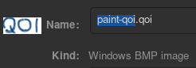

Hacking QOI Support into Microsoft Paint
{kind=link}
I have taken an interest in the QOI image format for its simplicity and compression ratio similar to PNG. I have tried making my own decoder and encoder for QOI as a coding challenge because of its ease of implementation (the entire specification is just one page). I wanted more software to support QOI, and then I thought about mspaint.
Right now I have not started yet, and I am totally cheating for the image above. "paint-qoi.qoi" was not really in QOI format.

Windows XP Paint and gdiplus.dll
I will be working with the mspaint executable from Windows XP, which was the first version to support popular image formats like JPEG and PNG.
When I run it with Wine on Linux, it's able to load and save JPEG, PNG, GIF, and TIFF images.
{kind=link}
But when running it in Windows 2000, it can only load and save bitmaps native to Windows. What's going on?
{kind=link}
In order to support more image codecs, mspaint has to load DLL file called gdiplus.dll, which is what handles JPEG, PNG, GIF, and TIFF codecs and loads them into bitmaps that mspaint can use.
GDI+ was introduced in Windows XP and Wine supports GDI+, but since Windows 2000 doesn't have GDI+, mspaint is unable to load this DLL file and it can only handle Windows bitmaps.
{kind=link}
My idea here is to get mspaint to load a different DLL file that supports the QOI codec.
Creating a new DLL file
First, I will need to know what GDI+ functions mspaint uses. Luckily, there is this space in the binary with all the GDI+ function names it uses.
{kind=link}
Now with some help from Microsoft's documentation and MinGW's GDI+ headers, I can begin to write my own DLL. I don't want to reinvent the wheel, so the new DLL will use the original gdiplus.dll file while intercepting some function calls and return values necessary to handle QOI.